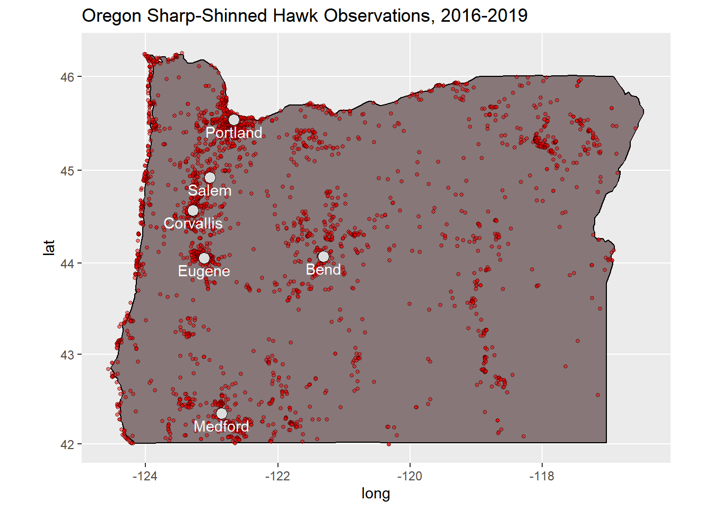
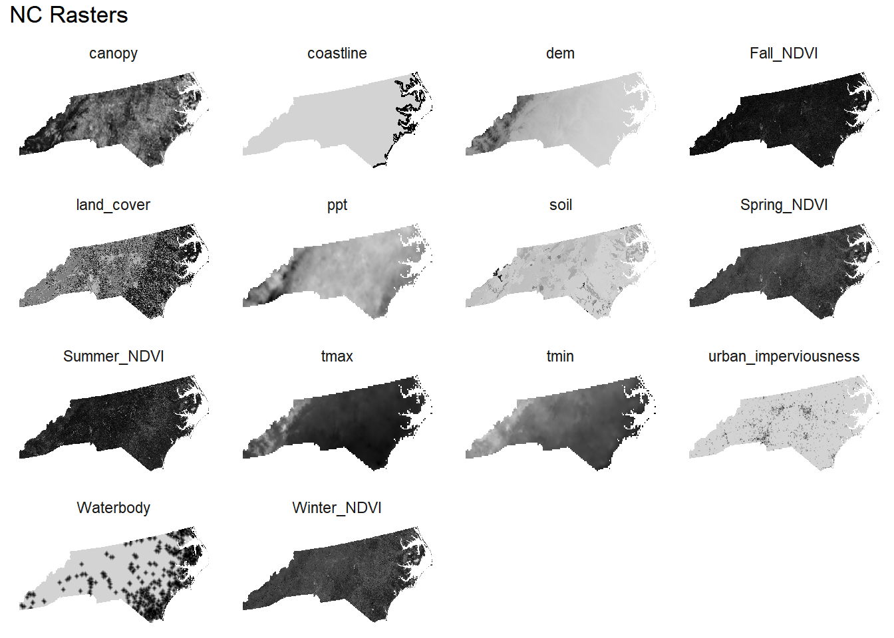

# import libraries
import geopandas as gpd
import os
# Load the shapefile into a GeoDataFrame
gdf = gpd.read_file("../data/US_State_Boundaries/US_State_Boundaries.shp")
gdf = gdf.to_crs("EPSG:5070")
state_abbreviations = ["CO", "NC", "OR", "VT"]
output_dir = "../data/US_State_Boundaries"
if not os.path.exists(output_dir):
os.makedirs(output_dir)
for sa in state_abbreviations:
try:
state_gdf = gdf[gdf["STATE_ABBR"] == sa]
output_path = os.path.join(output_dir, f"{sa}_State_Boundaries.shp")
state_gdf.to_file(output_path)
except Exception as e:
print(f'Failed to save shapefile for state {sa}: {e}')Getting the Data - Bird Species Observations and Environmental Rasters
Overview
Data Sources
- State Boundary Data
- ArcGIS Hub (Shapefile download with filters set to the 4 states in question)
- eBird Observation Data
- Raster Data
- DEM | Source Page
- Download by regions (Great Plains, Northeast, Northwest, Southeast, Southwest, and Upper Midwest)
- Urban Imperviousness | Source Page
- NLCD 2019 Percent Developed Imperviousness (CONUS), NLCD 2019 Developed Imperviousness Descriptor (CONUS)
- Land Cover
- NLCD 2019 Land Cover (CONUS)
- Canopy
- NLCD 2016 USFS Tree Canopy Cover (CONUS)
- Weather (min/max temperature, avg precipitation)
- Download weather raster data for “ppt”, “tmax”, “tmin”, 2017-2019 at a 4km resolution and 30-year monthly normals at an 800m resolution
- URL to download 4km data is: https://services.nacse.org/prism/data/public/4km/
/ - URL to download 800m data is https://services.nacse.org/prism/data/public/normals/800m/
/
- Hydrography (Water Bodies & Coast) | Source Page
- Soil | Source Page
- Vegetation Index
- USGS Earth Explorer (eVIIRS NDVI, 02/23/21-03/08/21 1km; 05/04/21-05/17/21 1km; 09/07/21-09/20/21 1km; 11/30/21-12/13/21 1km)
- DEM | Source Page
Boundary Data
For simplicity, only data for the four states that are being used as observation areas needs to be downloaded (as a .shp file). By default, the zipped files should be saved in US_State_Boundaries.zip. Extract the files into a folder of the same name within the data directory, and use the following Python code to split the states into separate files:
eBird Data
There are four regions explored in this analysis from 2016 through 2019 (corresponding to the 4 boundary datasets):
- Colorado, 2016-2019
- North Carolina, 2016-2019
- Oregon, 2016-2019
- Vermont, 2016-2019
Species included are:
- Belted Kingfisher
- Cedar Waxwing
- Downy Woodpecker
- Ruddy Duck
- Sanderling
- Sandhill Crane
- Sharp-shinned Hawk
- Wild Turkey
Observation Data Pre-Processing
- Download each of the regions from the eBird Download Page, filtered by date range (you will need to request access annually). They will initially be downloaded as compressed folders, so the contents will need to be extracted. There is also an eBird API, but the use of the API is beyond the scope of this document.
- Using the R
aukpackage, the contents can be filtered and saved within the project data directory:
# Import libraries
library(auk)
library(dplyr)
library(readr)
library(data.table)
library(knitr)
library(sf)
library(purrr)
auk_set_ebd_path("../data", overwrite = T)
# Specify where your eBird datasets were downloaded to
ebird.download.dir <- "../data/ebird_downloads/"
# Define species
species <- c("Sandhill Crane", "Sharp-shinned Hawk",
"Wild Turkey", "Downy Woodpecker",
"Sanderling", "Cedar Waxwing",
"Belted Kingfisher", "Ruddy Duck")
# Parse eBird downloads
for (dir in list.dirs(ebird.download.dir)[-1]) {
# List .txt files that start with "ebd_"
in.file <- list.files(path = dir, pattern = "^ebd_.*\\.txt$", full.names = T)[[1]]
# Use regular expression to extract state abbreviation
state.abbreviation <- sub(".*_US-([A-Z]{2})_.*", "\\1", in.file)
out.file <- paste0("../data/", state.abbreviation, ".txt")
# Read in the filtered data using the `auk` library, saving to `out.file`
auk_ebd(in.file) %>%
auk_species(species = species) %>%
auk_filter(file = out.file, overwrite=T, execute=T)
}# Show example (NC data)
readr::read_delim("../data/NC.txt", delim = "\t") %>%
group_by(`COMMON NAME`) %>%
summarize(count = n()) %>%
kable()| COMMON NAME | count |
|---|---|
| Belted Kingfisher | 39564 |
| Cedar Waxwing | 23921 |
| Downy Woodpecker | 105634 |
| Ruddy Duck | 13698 |
| Sanderling | 11470 |
| Sandhill Crane | 411 |
| Sharp-shinned Hawk | 5454 |
| Wild Turkey | 10959 |
# Import leaflet
library(leaflet)
# Read in sample data
nc.shc <- readr::read_delim("../data/NC.txt", delim = "\t") %>%
dplyr::filter(`COMMON NAME` == "Sandhill Crane")
leaflet(nc.shc) %>%
addTiles() %>% # This adds the OpenStreetMap tiles
addMarkers(~LONGITUDE, ~LATITUDE) %>%
setView(lng = mean(nc.shc$LONGITUDE), lat = mean(nc.shc$LATITUDE), zoom = 7) %>%
addProviderTiles(providers$Stamen.Toner)# Some basic pre-processing
preprocess_obs <- function(data_path) {
data <- readr::read_delim(data_path, delim = "\t")
names(data) <- gsub(" ", "_", tolower(names(data)))
data <- data %>%
filter(approved == 1) %>%
dplyr::select(common_name, observation_count, latitude, longitude) %>%
group_by(common_name, latitude, longitude) %>%
summarize(observation_count = sum(as.numeric(observation_count), na.rm=T)) %>%
ungroup() %>%
as.data.table()
return(data)
}
states <- c("CO", "NC", "OR", "VT")
obs <- purrr::map(states, function(.x) {
out <- preprocess_obs(paste0("../data/", .x, ".txt"))
fwrite(out, paste0("../data/observations_", .x, ".csv"))
out
})
names(obs) <- states
head(obs$NC) %>% kable()| common_name | latitude | longitude | observation_count |
|---|---|---|---|
| Belted Kingfisher | 33.84197 | -77.96105 | 4 |
| Belted Kingfisher | 33.85371 | -77.96410 | 2 |
| Belted Kingfisher | 33.85881 | -77.97316 | 1 |
| Belted Kingfisher | 33.85940 | -78.52684 | 16 |
| Belted Kingfisher | 33.86084 | -77.98328 | 1 |
| Belted Kingfisher | 33.86149 | -77.99476 | 58 |
Rasters
Raster data is a type of digital image represented by a grid of pixels, where each pixel has an associated value that represents information about a particular geographic area. It is one of the two primary ways to represent geospatial data (the other being vector data). In environmental studies and geographic analysis, raster data is extensively used to represent continuous data such as elevation, temperature, or land cover. In this project, raster data serves as the basis for various explanatory variables that influence bird species distributions, including digital elevation, urban imperviousness, land cover, canopy, weather, hydrography, soil, and vegetation index. Each of these variables represents environmental conditions that can affect bird habitat and distribution.
Raster Pre-Processing
Before using raster data for analysis, it is crucial to preprocess them to ensure compatibility, accuracy, and relevancy. Raster pre-processing includes a series of steps that prepare and standardize the raster datasets for subsequent analyses. Along with some general pre-processing steps (and corresponding code), the following sections outline specific pre-processing steps tailored for each type of explanatory variable being used in the analysis.
General Raster Pre-Processing Steps
- Load the environmental raster datasets & State Boundary data
- Reproject to CRS EPSG:5070
- Resample each to 2500 x 2500 meters
- Mask each raster using State Boundary (ensure oceans and great lakes are set to
nodata) - Output updated raster data
# Import libraries
import arcpy
import os
def general_raster_preprocessing(
raster_name,
out_raster_name,
data_path="../data",
state_boundary_path="../data/US_State_Boundaries",
states=["NC", "CO", "OR", "VT"],
state_file_suffix="_State_Boundaries.shp",
out_path="../gis630/data",
crs=5070,
wildcard="*",
raster_type="All"
):
# Example usage:
#
# general_raster_preprocessing(
# raster_name="canopy/nlcd_2016_treecanopy_2019_08_31",
# out_raster_name="canopy",
# out_path="../data/canopy"
# )
# Set the workspace environment, which is the folder where the raster files are located
arcpy.env.workspace = os.path.join(data_path, raster_name)
# Enable overwriting outputs
arcpy.env.overwriteOutput = True
# List all the raster files in the workspace directory
rasters = arcpy.ListRasters(wildcard, raster_type)
print("Rasters: ", rasters)
# Loop through each raster file in the list
for raster in rasters:
# Reproject the raster to a projected coordinate system with units in meters
out_coordinate_system = arcpy.SpatialReference(crs)
print(f"Reprojecting raster to CRS {crs}...")
reprojected_raster = arcpy.ProjectRaster_management(raster, None, out_coordinate_system)
# Resample the reprojected raster to 2500 x 2500 meters resolution using
# the nearest neighbor algorithm
print(f"Resampling {raster} to 2500x2500 meters...")
resampled_raster = arcpy.Resample_management(reprojected_raster, None, "2500 2500", "NEAREST")
# Loop through each state in the states list
for state in states:
# Construct the file path to the state boundary shapefile
state_path = os.path.join(state_boundary_path, state + state_file_suffix)
# Extract the area of the resampled raster that intersects with the state boundary
print(f"Extracting {state} data using state mask...")
out_state_raster = arcpy.sa.ExtractByMask(reprojected_raster, state_path)
# Save the extracted raster to a new file with state abbreviation appended to name
out_state_raster.save(os.path.join(out_path, out_raster_name + "_" + state + ".tif"))Ensure that extents match for each raster.
Digital Elevation Model (DEM)
DEM Pre-Processing Steps:
- Using
arcpy.management.MosaicToNewRaster, join all DEM raster parts into single raster
# Import libraries
import arcpy
import os
def list_rasters_recursive(directory, raster_list=[]):
if not "mosaic" in directory:
arcpy.env.workspace = directory
rasters = arcpy.ListRasters("*", "ADF")
if rasters:
raster_list.extend([directory])
# recurse into subdirectories
for subdir in [d for d in os.listdir(directory) if os.path.isdir(os.path.join(directory, d))]:
list_rasters_recursive(os.path.join(directory, subdir), raster_list)
return raster_list
def combine_dem_parts(
dem_dir="../data/dem/raw_dem",
output_dir="../data/dem",
output_raster_name="mosaic_dem"
):
rasters = list(set(list_rasters_recursive(dem_dir)))
# Convert the list of rasters to a semicolon-delimited string
rasters_string = ';'.join(rasters)
# Use Mosaic to New Raster tool to join all the rasters together
arcpy.management.MosaicToNewRaster(rasters_string,
output_dir,
output_raster_name + ".tif",
None,
"32_BIT_FLOAT",
None,
1,
"LAST",
"FIRST")
print("Mosaic completed successfully!")
# Combine rasters in "raw_dem" folder (great_plains, northeast, northwest, etc.)
combine_dem_parts(dem_dir="../data/dem/raw_dem", output_dir="../data/dem")- Follows general raster pre-processing steps, using the combined raster from step 1
# Using the combined raster, apply "general raster preprocessing" (resample, reproject, mask)
general_raster_preprocessing(
raster_name="dem",
out_raster_name="dem",
out_path="dem"
)Urban Imperviousness
(Follows general raster pre-processing steps)
# Using the combined raster, apply "general raster preprocessing" (resample, reproject, mask)
general_raster_preprocessing(
raster_name="urban_imperviousness",
out_raster_name="urban_imperviousness",
out_path="../data/urban_imperviousness"
)Land Cover
# Using the combined raster, apply "general raster preprocessing" (resample, reproject, mask)
general_raster_preprocessing(
raster_name="land_cover/nlcd_2019_land_cover_l48_20210604",
out_raster_name="land_cover",
out_path="../data/land_cover"
)- Set values of 128 to NA
# Import libraries
import arcpy
import os
import shutil
from arcpy.sa import Con
from arcpy.sa import Raster
def fix_lc_na(data_path, na_val, states=["CO", "NC", "OR", "VT"]):
for state in states:
# Set path of the input raster
input_raster_path = os.path.join(data_path, f"land_cover_{state}.tif")
# Create a temporary output path
temp_output_path = os.path.join(data_path, f"temp_land_cover_{state}.tif")
# Read the input raster
input_raster = Raster(input_raster_path)
# Use the Con tool to set values of the defined na value to NoData
output_raster = Con(input_raster != na_val, input_raster)
# Save the output raster to the temporary file path
output_raster.save(temp_output_path)
# Delete raster variables to release locks on the files
del input_raster
del output_raster
# Allow arcpy to perform garbage collection
arcpy.ClearWorkspaceCache_management()
temp_files = [os.path.join(data_path, f) for f in os.listdir(data_path) if f.startswith("temp_")]
for file in temp_files:
# Move the temporary file to the original file path
shutil.move(file, file.replace("temp_", ""))
fix_lc_na(data_path="../data/land_cover", na_val=128)Canopy
(Follows general raster pre-processing steps)
# Using the combined raster, apply "general raster preprocessing" (resample, reproject, mask)
general_raster_preprocessing(
raster_name="canopy/nlcd_2016_treecanopy_2019_08_31",
out_raster_name="canopy",
out_path="../data/canopy"
)Weather
Downloading the weather data:
# Import libraries
import urllib.request
import os
import zipfile
from typing import List
def get_weather_data(data_path:str) -> None:
"""
Downloads and processes weather raster data for specified variables and years at a 4km resolution
and 30-year monthly normals at an 800m resolution. The function downloads, aggregates, and resamples
the rasters before trimming them to the North Carolina boundary.
Args
- data_path : A file path to the data directory
Output
A list of aggregated raster layer names (should match the last three inputs)
"""
# Checks to confirm valid file paths
if not os.path.exists(data_path):
raise FileNotFoundError(f"Data path '{data_path}' not found.")
vars = ["ppt", "tmax", "tmin"]
# Setup for yearly 4km resolution
yrs = [2017, 2018, 2019]
pairs = list()
pairs = [(v, y) for v in vars for y in yrs if (v, y) not in pairs]
# Setup for 30 year normal monthly 800m resolution
mnths = ["{:02d}".format(m) for m in range(1, 13)]
norm_pairs = list()
norm_pairs = [(v, m) for v in vars for m in mnths if (v, m) not in norm_pairs]
### Get Raster Data ######
print("Getting explanatory Weather Rasters...")
# Data documentation https://www.prism.oregonstate.edu/documents/PRISM_downloads_web_service.pdf
out_path = os.path.join(data_path, "weather/")
os.makedirs(out_path, exist_ok=True)
# 4km yearly data (for 2017-2019)
for v, y in pairs:
dwnld_out = os.path.join(out_path, f"{v}_{y}.zip")
dwnld_path = os.path.join(out_path, f"{v}_{y}")
if not os.path.exists(dwnld_path):
url = f"https://services.nacse.org/prism/data/public/4km/{v}/{y}"
print(f"Downloading weather data from {url}...")
urllib.request.urlretrieve(url, dwnld_out)
print(f"Saved {v}/{y} to {dwnld_out}")
with zipfile.ZipFile(dwnld_out, "r") as zfile:
zfile.extractall(dwnld_path)
print(f"Extracted {v}/{y} from {dwnld_out} to {dwnld_path}")
os.remove(dwnld_out)
# 800m monthly data (30 year normals), used to estimate higher resolution for the 4km data
for v, m in norm_pairs:
dwnld_out = os.path.join(out_path, f"{v}_{m}.zip")
dwnld_path = os.path.join(out_path, f"{v}_{m}")
if not os.path.exists(dwnld_path):
url = f"https://services.nacse.org/prism/data/public/normals/800m/{v}/{m}"
print(f"Downloading weather data from {url}...")
urllib.request.urlretrieve(url, dwnld_out)
print(f"Saved {v}/{m} to {dwnld_out}")
with zipfile.ZipFile(dwnld_out, "r") as zfile:
zfile.extractall(dwnld_path)
print(f"Extracted {v}/{m} from {dwnld_out} to {dwnld_path}")
os.remove(dwnld_out)
print("Finished.")
get_weather_data("../data")Weather Pre-Processing Steps:
- Iteratively load yearly data by variable (using
get_rasters_from_dir)
# Import libraries
import arcpy
import os
from typing import List
def get_rasters_from_dir(var:str,
periods:list,
out_path:str) -> List[arcpy.Raster]:
"""
Retrieves a list of arcpy.Raster objects from the specified directory based on the input parameters.
Args
var : The variable type (e.g. 'prcp', 'tmin', or 'tmax').
periods : A list of periods (years or months) for which rasters are needed.
out_path : The path to the directory containing the raster files.
Output
A list of arcpy.Raster objects corresponding to the specified variable and periods.
"""
return [
arcpy.Raster(
os.path.join(
os.path.join(out_path, f"{var}_{p}"),
[f for f in os.listdir(os.path.join(out_path, f"{var}_{p}") ) \
if f.endswith('.bil') and var in f][0]
)
) for p in periods] - Aggregate all of the yearly rasters for each variable with the corresponding function (max, min, avg) using
arcpy.sa.CellStatistics - Save to (intermediate) raster files
- Repeat steps 1-3 on monthly data, by variable
- Calculate the weights based on the number of years in the datasets (3)
- Combine monthly/yearly rasters by variable, applying weights (
arcpy.Raster("aggregated_year_raster") * year_weight + arcpy.Raster("aggregated_month_raster") * month_weight) - Apply general raster pre-Processing steps to each combined raster (final output should be 1 raster per variable)
data_path = "../data/weather"
wspace = "../data/weather/aggregated"
if not os.path.exists(wspace):
os.mkdir(wspace)
max_temp_data = "max_temp.tif"
min_temp_data = "min_temp.tif"
avg_prcp_data = "avg_prcp.tif"
states = ["CO", "NC", "OR", "VT"]
vars = ["ppt", "tmax", "tmin"]
# Setup for yearly 4km resolution
yrs = [2017, 2018, 2019]
pairs = list()
pairs = [(v, y) for v in vars for y in yrs if (v, y) not in pairs]
# Setup for 30 year normal monthly 800m resolution
mnths = ["{:02d}".format(m) for m in range(1, 13)]
norm_pairs = list()
norm_pairs = [(v, m) for v in vars for m in mnths if (v, m) not in norm_pairs]### Process data and add to GDB #########
for var in vars:
print(f"Checking {var}...")
out_path = os.path.join(wspace, var)
if not os.path.exists(out_path):
os.mkdir(out_path)
# Set workspace
arcpy.env.workspace = out_path
if var == "tmax":
raster = max_temp_data
elif var == "tmin":
raster = min_temp_data
else:
raster = avg_prcp_data
arcpy.env.overwriteOutput = True
# Average with other years of same var type
agg_rasters = dict()
# Yearly data
rasters = get_rasters_from_dir(var, yrs, data_path)
raster_out = raster
if var == "tmax":
agg_func = "MAXIMUM"
elif var == "tmin":
agg_func = "MINIMUM"
elif var == "ppt":
agg_func = "MEAN"
agg_rasters.update({var:{"yr":raster_out}})
print(f"Aggregating {var} for all years...")
outCellStats = arcpy.sa.CellStatistics(rasters, agg_func, "DATA")
outCellStats.save(raster_out)
print(f"Finished aggregating {var} for all years.")
# Monthly 30-year normals
rasters = get_rasters_from_dir(var, mnths, data_path)
raster_out = f"{var}_30yr_800m.tif"
agg_rasters[var].update({"norm":raster_out})
print(f"Aggregating {var} for all 800m 30 year normal months...")
outCellStats = arcpy.sa.CellStatistics(rasters, agg_func, "DATA")
outCellStats.save(raster_out)
print(f"Finished aggregating {var} for all 30 year normal months.")
# Calculate the weights based on the number of years in the datasets
initial_weight_4km = 3.0
initial_weight_800m = 3.0 / 30.0
total_weight = initial_weight_4km + initial_weight_800m
normalized_weight_4km = initial_weight_4km / total_weight
normalized_weight_800m = initial_weight_800m / total_weight
combined_raster = (arcpy.Raster(agg_rasters[var]["yr"]) * normalized_weight_4km) + \
(arcpy.Raster(agg_rasters[var]["norm"]) * normalized_weight_800m)
combined_raster.save("aggregated_" + raster)
# Using the combined raster, apply "general raster preprocessing" (resample, reproject, mask)
general_raster_preprocessing(
raster_name=f"weather/aggregated/{var}",
out_raster_name=var,
out_path="../data/weather",
wildcard="agg*"
)
arcpy.env.overwriteOutput = False
print("Finished.)Hydrography (Water Bodies & Coasts)
Hydrography Pre-Processing Steps:
- Use
arcpy.conversion.FeatureClassToShapefileto convert file geodatabase to shapefiles
# Import libraries
import arcpy
import os
def convert_hydro_gdb(
data_path:str="../data/hydrography/",
gdb_name:str="hydrusm010g.gdb_nt00897/hydrusm010g.gdb",
data_sets:list=["Coastline", "Waterbody"],
output_path:str="../data/hydrography/"
) -> None:
input_str = ";".join([os.path.join(data_path, gdb_name, ds) for ds in data_sets])
out = arcpy.conversion.FeatureClassToShapefile(input_str, output_path)
convert_hydro_gdb()- Load waterbody data & State Boundary data as dataframes
- Remove “Lake Dry” features from waterbody data
- Create binary values in waterbody and boundary datasets (waterbody data -> 0, boundary data -> 1)
- Reproject CRS of both to EPSG:5070
- Perform unary union on boundary data, calculate total bounds
- Get all points in US boundary using bounds and a resolution of 2500 meters
- Join points with water body data; Set oceans/great lakes to
nodatausing preset binary values - Set metadata and export waterbody data to raster
- Create “zones” based on distance from water bodies using binary dilation (i.e., on a water body is 1, 0 to 2500 meters away is 0.8, etc.)
- Output raster
# Import libraries
import os
import geopandas as gpd
from rasterio.transform import from_origin
import rasterio
from shapely.geometry import Point
import numpy as np
from scipy.ndimage import binary_dilation
data_path = "../data"
hyd_data_path = os.path.join(data_path, "hydrography")
states = ["CO", "NC", "OR", "VT"]
resolution = 2500 # in the same units as your CRS
def update_array(arr):
# Create a copy of the array to hold the updated values
arr_updated = arr.copy().astype(float)
mask = arr == -1
# Create the structuring element for dilation
selem = np.array([[0, 1, 0],
[1, 1, 1],
[0, 1, 0]])
# Perform the dilation operation multiple times
dilated1 = binary_dilation(arr == 1, structure=selem)
dilated2 = binary_dilation(dilated1, structure=selem)
dilated3 = binary_dilation(dilated2, structure=selem)
dilated4 = binary_dilation(dilated3, structure=selem)
# Subtract the result from the original dilation to get the zones
zone1 = dilated1 & ~(arr == 1)
zone2 = dilated2 & ~dilated1
zone3 = dilated3 & ~dilated2
zone4 = dilated4 & ~dilated3
# Update the values in the array based on the zones
arr_updated[zone1] = 0.8
arr_updated[zone2] = 0.6
arr_updated[zone3] = 0.4
arr_updated[zone4] = 0.2
arr_updated[mask] = -1
return arr_updated
# Load the shapefile
print("Reading waterbody data...")
gdf = gpd.read_file(os.path.join(hyd_data_path, 'Waterbody.shp'))
# Filter out records where Feature == "Dry Lake"
gdf = gdf[gdf['Feature'] != 'Lake Dry']
# Overwrite the original shapefile
gdf.to_file(os.path.join(hyd_data_path, 'Waterbody.shp')
# Create a new column in the waterbody and streams dataframes with all values set to 0
print("Creating raster values...")
water_bodies['raster_value'] = 0
for state in states:
print(f"Reading {state} boundary data...")
state_boundary = gpd.read_file(
os.path.join(data_path, f"US_State_Boundaries/{state}_State_Boundaries.shp")
)
# Create a new column in the us_boundary dataframe with all values set to 1
state_boundary['raster_value'] = 1
# Reproject to a common CRS
print("Reprojecting...")
water_bodies = water_bodies.to_crs('EPSG:5070')
state_boundary = state_boundary.to_crs('EPSG:5070')
# Create a single polygon representing the mainland US
print("Combining US states...")
state_boundary = state_boundary.unary_union
# Create a new GeoDataFrame with the combined polygon and set the raster value to 1
state_boundary = gpd.GeoDataFrame([1],
geometry=[state_boundary],
columns=['raster_value'],
crs='EPSG:5070')
# Determine the extent of the combined GeoDataFrame
xmin, ymin, xmax, ymax = state_boundary.total_bounds
# Create a grid of points within this extent
ys, xs = np.mgrid[ymin:ymax:resolution, xmin:xmax:resolution]
points = gpd.GeoDataFrame(geometry=[Point(x, y) for x, y in zip(xs.flatten(), ys.flatten())],
crs="EPSG:5070")
# Assign each point a value based on whether it falls within a water polygon or not
points['is_within_bounds'] = gpd.sjoin(points,
state_boundary,
predicate='within',
how='left')['index_right'].notna().astype(int)
points['is_water'] = gpd.sjoin(points,
water_bodies,
predicate='within', how='left')['index_right'].notna().astype(int)
# Assign a 'nodata' value to points that are not within the US mainland boundary
points.loc[points['is_within_bounds'] == 0, 'is_water'] = -1
points.drop(columns='is_within_bounds', inplace=True)
# Create a raster from these points
transform = from_origin(xmin, ymax, resolution, resolution) # rasterio transform (Affine object)
meta = {
'driver': 'GTiff',
'height': ys.shape[0],
'width': xs.shape[1],
'count': 1,
'dtype': rasterio.uint8,
'crs': "EPSG:5070",
'transform': transform,
}
arr = np.flipud(points['is_water'].values.reshape(ys.shape).astype(int))
arr2 = update_array(arr)
out_fn = os.path.join(hyd_data_path, f'{state}_Waterbody.tif')
meta = {
'driver': 'GTiff',
'height': ys.shape[0],
'width': xs.shape[1],
'count': 1,
'dtype': rasterio.float32,
'crs': "EPSG:5070",
'transform': transform,
}
print(f"Writing final raster for {state}...")
with rasterio.open(out_fn, 'w', **meta) as dst:
dst.write(arr2.astype(rasterio.float32), 1)
dst.nodata = -1.- Load coast data
- Apply 5000 Meter buffer to lines to convert to polygons
# Import libraries
import arcpy
arcpy.analysis.Buffer("../data/hydrography/Coastline.shp",
"../data/hydrography/Coastline_Buffer.shp",
"5000 Meters", dissolve_option="ALL")b. Convert buffered coastline to raster
# Import libraries
import geopandas as gpd
from rasterio.transform import from_origin
import rasterio
from shapely.geometry import Point
import numpy as np
# Define your desired resolution
resolution = 2500 # in the same units as your CRS
# Load the coastline buffer shapefile
coastline_buffer = gpd.read_file('../data/hydrography/Coastline_Buffer.shp')
# Reproject the coastline buffer to the desired CRS
coastline_buffer = coastline_buffer.to_crs('EPSG:5070')
# Determine the extent of the coastline buffer
xmin, ymin, xmax, ymax = coastline_buffer.total_bounds
# Create a grid of points within this extent
ys, xs = np.mgrid[ymin:ymax:resolution, xmin:xmax:resolution]
points = gpd.GeoDataFrame(geometry=[Point(x, y) for x, y in zip(xs.flatten(), ys.flatten())],
crs="EPSG:5070")
# Assign each point a value based on whether it falls within the coastline buffer polygon or not
points['is_buffer'] = gpd.sjoin(points,
coastline_buffer,
predicate='within',
how='left')['index_right'].notna().astype(int)
# Define the output filename
out_fn = '../data/hydrography/Coastline_Buffer_Raster.tif'
# Create a raster from these points
transform = from_origin(xmin, ymax, resolution, resolution) # rasterio transform (Affine object)
meta = {
'driver': 'GTiff',
'height': ys.shape[0],
'width': xs.shape[1],
'count': 1,
'dtype': rasterio.uint8,
'crs': "EPSG:5070",
'transform': transform,
}
arr = np.flipud(points['is_buffer'].values.reshape(ys.shape).astype(int))
with rasterio.open(out_fn, 'w', **meta) as dst:
dst.write(arr.astype(rasterio.uint8), 1)
dst.nodata = 255
print("Raster file created successfully!")c. Apply general raster pre-Processing steps to intermediate raster
general_raster_preprocessing(
raster_name="hydrography",
out_raster_name="coastline",
out_path="../data/hydrography",
wildcard="Coastline_Buffer*"
)Soil
Soil Pre-Processing Steps:
- Load soil shapefile
- Create new field called “MUSYM_CODE” using the “MUSYM” field that maps each unique value to an integer
- Define raster pixel size, extent; Initialize raster data using GDAL
SetGeoTransform - Set raster projection using original source spatial reference
- Output to (intermediate) raster using GDAL
RasterizeLayer, withoptions=["ATTRIBUTE=MUSYM_CODE"]
# Import libraries
from osgeo import gdal, ogr
import geopandas as gpd
import pandas as pd
# Open the data source
vector_ds = "../data/soil/wss_gsmsoil_US_[2016-10-13]/spatial/gsmsoilmu_a_us.shp"
raster_fn = "../data/soil/raster/gsmsoilmu_a_us.tif"
def shp_to_raster(vector_ds, raster_fn, akey):
vector_ds = ogr.Open(vector_ds)
layer = vector_ds.GetLayer()
# Create the destination data source
pixel_size = 0.01 # Define this according to your needs
x_min, x_max, y_min, y_max = layer.GetExtent()
size_x = int((x_max - x_min) / pixel_size)
size_y = int((y_max - y_min) / pixel_size)
# Create the raster dataset
raster_ds = gdal.GetDriverByName('GTiff').Create(raster_fn, size_x, size_y, 1, gdal.GDT_Float32)
raster_ds.SetGeoTransform((x_min, pixel_size, 0, y_max, 0, -pixel_size))
# Add a spatial reference
srs = layer.GetSpatialRef()
raster_ds.SetProjection(srs.ExportToWkt())
# Rasterize
gdal.RasterizeLayer(raster_ds, [1], layer, options=[f"ATTRIBUTE={akey}"])
# Close datasets
raster_ds = None
vector_ds = None
return None
# Load the shapefile into a GeoDataFrame
gdf = gpd.read_file("../data/soil/wss_gsmsoil_US_[2016-10-13]/spatial/gsmsoilmu_a_us.shp")
# Create a DataFrame that maps each unique MUSYM to a unique integer
musym_codes = pd.DataFrame({'MUSYM': gdf['MUSYM'].unique()})
musym_codes['MUSYM_CODE'] = range(1, len(musym_codes) + 1)
# Merge the MUSYM_CODE field into the GeoDataFrame
gdf = gdf.merge(musym_codes, on='MUSYM')
# Save the GeoDataFrame back to a shapefile
gdf.to_file("../data/soil/codes/gsmsoilmu_a_us.shp")
vector_ds = "../data/soil/codes/gsmsoilmu_a_us.shp"
raster_fn = "../data/soil/raster/gsmsoilmu_a_us.tif"
shp_to_raster(vector_ds, raster_fn, akey="MUSYM_CODE")- Apply general raster pre-Processing steps to intermediate raster
general_raster_preprocessing(
raster_name="soil",
out_raster_name="soil",
out_path="../data/soil"
)Vegetation Index
Vegetation Index Pre-Processing Steps:
- For each seasonal raster, (spring, summer, fall, winter), apply the general raster pre-processing steps
# Iterate through each season
for season in ["Spring", "Summer", "Fall", "Winter"]:
try:
print(f"Applying raster preprocessing for {season}...")
# Using the combined raster, apply "general raster preprocessing" (resample, reproject, mask)
general_raster_preprocessing(
raster_name=f"NDVI/US_eVSH_NDVI-{season}-2021",
out_raster_name=f"{season}_NDVI",
out_path="../data/NDVI",
wildcard="*1KM.VI_NDVI*",
raster_type="TIF")
print("-----------------")
except Exception as e:
print(f"An error occurred while processing {season}: {str(e)}")
print("Finished.")- Re-scale (divide each value by 10,000, according the USGS specifications)
NOT CURRENTLY BEING USED
# Import libraries
import rasterio
for season in ["Spring", "Summer", "Fall", "Winter"]:
for state in ["CO", "NC", "OR", "VT"]:
raster_path = f"../data/NDVI/{season}_NDVI_{state}.tif"
# Open the raster file
with rasterio.open(raster_path) as src:
# Read the data from the raster
data = src.read()
# Divide the raster values by 10,000
rescaled_data = data / 10000.0
# Parameters for saving
kwargs = src.meta
kwargs.update(dtype=rescaled_data.dtype)
# Save the rescaled data back to the same raster file (overwriting)
with rasterio.open(raster_path, 'w', **kwargs) as dest:
dest.write(rescaled_data)
print(f'Rescaled {season} {state} raster saved at {raster_path}')
print("Finished rescaling rasters.")Final Pre-Processing Steps (Ensuring Shape/Size Conformity)
- Create dictionary of all rasters:
def get_file_paths_dict(
base_path = "../data",
states = ["CO", "NC", "OR", "VT"],
categories = [
"canopy/canopy_",
"dem/dem_",
"hydrography/coastline_",
"hydrography/Waterbody",
"land_cover/land_cover_",
"NDVI/Fall_NDVI_",
"NDVI/Spring_NDVI_",
"NDVI/Summer_NDVI_",
"NDVI/Winter_NDVI_",
"soil/soil_",
"urban_imperviousness/urban_imperviousness_",
"weather/ppt_",
"weather/tmax_",
"weather/tmin_"
], verbose=False):
# Dictionary to store paths
file_paths_dict = {}
# Loop through each category and state, and construct the file path
for category in categories:
# Extract the category name for the outer dictionary key
category_name = category.split('/')[0]
if category_name not in file_paths_dict:
file_paths_dict[category_name] = {}
# Extract the filename prefix for the inner dictionary key
filename_prefix = category.split('/')[-1]
for state in states:
# Handle special cases for 'Waterbody'
if filename_prefix == "Waterbody":
file_path = f"{base_path}/{category_name}/{state}_{filename_prefix}.tif"
else:
file_path = f"{base_path}/{category}{state}.tif"
# Add the file path to the inner dictionary
inner_key = filename_prefix.rstrip('_')
if inner_key not in file_paths_dict[category_name]:
file_paths_dict[category_name][inner_key] = {}
file_paths_dict[category_name][inner_key][state] = file_path
if verbose:
# Print the dictionary
for category, filenames in file_paths_dict.items():
print(f"{category}:")
for filename, state_paths in filenames.items():
print(f" {filename}:")
for state, file_path in state_paths.items():
print(f" {state}: {file_path}")
return(file_paths_dict)
file_paths_dict = get_file_paths_dict(verbose=True)- Check for dimension conformity:
# Import libraries
import rasterio
# Loop through the categories (e.g., canopy, dem)
for category, subcategories in file_paths_dict.items():
print(f"{category}:")
# Loop through the subcategories (e.g., canopy, dem)
for subcategory, states in subcategories.items():
print(f" {subcategory}:")
# Loop through the states (e.g., CO, NC)
for state, file_path in states.items():
# Open the file using rasterio
try:
with rasterio.open(file_path) as raster:
print(f" {state} dimensions: {raster.shape}")
except Exception as e:
print(f" {state}: Could not read file. {str(e)}")
# Example Output:
#
# canopy:
# canopy:
# CO dimensions: (204, 258)
# NC dimensions: (138, 313)
# OR dimensions: (243, 285)
# VT dimensions: (114, 61)
# dem:
# dem:
# CO dimensions: (204, 258)
# NC dimensions: (138, 312)
# OR dimensions: (243, 285)
# VT dimensions: (114, 61)
# ...- Define a function to resample and transform rasters
- Loop through rasters, and apply resampling and transformation
import numpy as np
import rasterio
from rasterio.warp import calculate_default_transform, reproject, Resampling
from rasterio.mask import mask
from rasterio.shutil import copy
from tqdm import tqdm
import os
dst_crs = 'EPSG:5070' # CRS for your target raster
states = ["CO", "NC", "OR", "VT"]
data_path = "../data"
def resample_raster(src_path, dst_path, dst_crs, target, resampling=Resampling.nearest):
with rasterio.open(target) as tar:
target_transform, target_width, target_height = calculate_default_transform(tar.crs, dst_crs, tar.width, tar.height, *tar.bounds)
mask_geom = [{'type': 'Polygon', 'coordinates': [[
[tar.bounds.left, tar.bounds.bottom],
[tar.bounds.left, tar.bounds.top],
[tar.bounds.right, tar.bounds.top],
[tar.bounds.right, tar.bounds.bottom],
[tar.bounds.left, tar.bounds.bottom]
]]}]
with rasterio.open(src_path) as src:
transform, width, height = calculate_default_transform(src.crs, dst_crs, src.width, src.height, *src.bounds)
kwargs = src.meta.copy()
kwargs.update({
'crs': dst_crs,
'transform': target_transform,
'width': target_width,
'height': target_height,
'nodata': src.nodata # use the original's nodata value
})
with rasterio.open(dst_path, 'w', **kwargs) as dst:
for i in range(1, src.count + 1):
reproject(
source=rasterio.band(src, i),
destination=rasterio.band(dst, i),
src_transform=src.transform,
src_crs=src.crs,
dst_transform=target_transform,
dst_crs=dst_crs,
resampling=resampling)
# Apply the mask in a separate step
with rasterio.open(dst_path, 'r+') as dst: # Open in read/write mode
out_image, out_transform = mask(dst, mask_geom, crop=True, nodata=dst.nodata)
dst.write(out_image)
dst.transform = out_transform
target_raster = file_paths_dict["NDVI"]["Fall_NDVI"] # The raster to match
outpath = os.path.join(data_path, "rasters")
if not os.path.exists(outpath):
os.mkdir(outpath)
for category, subcategories in file_paths_dict.items():
# Loop through the subcategories (e.g., canopy, dem)
for subcategory, states in subcategories.items():
# Loop through the states (e.g., CO, NC)
for state, source_raster in states.items():
raster_name = os.path.basename(source_raster).replace(".tif", "")
print(f"Resampling and transforming {raster_name}...")
destination_raster = os.path.join(outpath, raster_name + '.tif') # The output path
if source_raster == target_raster[state]: # if source raster is the same as target raster
copy(source_raster, destination_raster) # just copy the raster to the outpath
else:
if "land_cover" in raster_name or "soil" in raster_name:
resampling = Resampling.nearest
else:
resampling = Resampling.bilinear
resample_raster(source_raster, destination_raster, dst_crs, target_raster[state], resampling)
print("Fixing land cover NA values...")
# Fix land cover na values (they git a little messed up from the resampling)
fix_lc_na(data_path="../data/rasters", na_val=0)
print("Finished.")- Check that all shapes match (by state):
folder_path = '../data/rasters'
# Loop through all the files in the folder
for file_name in os.listdir(folder_path):
# Check if the file is a .tif file
if file_name.endswith('.tif'):
# Construct the full file path
file_path = os.path.join(folder_path, file_name)
# Open the raster file
with rasterio.open(file_path) as src:
# Print the shape of the raster file
print(f'Shape of {file_name}: {src.shape}')Combining the Data (Feature Extraction)
- Load preprocessed observation point data
- Sort by distance from center
- Ensure correct CRS
# Import libraries
import pandas as pd
import os
import geopandas as gpd
from shapely.geometry import Point
data_path = '../data/'
states = ["CO", "NC", "OR", "VT"]
for state in states:
input_name = "observations_" + state + ".csv"
output_file = "observations_" + state + ".shp"
print(f"Reading {state} data...")
bird_data_path = os.path.join(data_path, input_name)
df = pd.read_csv(bird_data_path)
# Convert the bird data to a GeoDataFrame
print(f"Converting {state} data to geodf...")
geometry = [Point(xy) for xy in zip(df['longitude'], df['latitude'])]
geo_df = gpd.GeoDataFrame(df, geometry=geometry, crs='EPSG:4326')
# Define target CRS
print(f"Updating CRS for {state}...")
target_crs = "EPSG:5070"
# If the bird data is not in the correct CRS, convert it
if geo_df.crs.to_string() != target_crs:
geo_df = geo_df.to_crs(target_crs)
print(f"Getting centroid of {state} data...")
# Get centroid of the entire sightings
centroid = geo_df.geometry.centroid.unary_union.centroid
print(f"Calculating distances from centroid for {state}...")
# Assign each point a distance attribute, being the distance from the centroid
geo_df['distance'] = geo_df.geometry.distance(centroid)
print(f"Sorting by distance from centroid in {state} data...")
# Sort the GeoDataFrame by the distance attribute
geo_df.sort_values(by='distance', inplace=True)
print(f"Saving {state} data to {output_file}...")
# Drop the distance attribute (we don't need it anymore)
geo_df.drop(columns='distance', inplace=True)
geo_df.to_file(os.path.join(data_path, output_file))
print("--------------")- Define pre-processed raster paths; Use
arcpy.sa.ExtractMultiValuesToPointsto extract raster values to the points in the bird data- canopy, dem, coast, waterbody, land_cover, soil, urban_imp, avg_prcp, max_tmp, min_tmp, ndvi_spring, ndvi_summer, ndvi_fall, ndvi_winter
- Use
arcpy.analysis.Selectto select points that have non-null raster values for all raster layers
# Import libraries
import os
import arcpy
from arcpy.sa import *
import csv
import pandas as pd
data_path = '../data/'
# Set environment settings
arcpy.env.workspace = data_path
arcpy.env.overwriteOutput = True
states = ["CO", "NC", "OR", "VT"]
# Define your target CRS
target_crs = arcpy.SpatialReference(5070) # The SpatialReference should be initiated with an EPSG code
for state in states:
input_name = "observations_" + state + ".shp"
out_name = "all_data_" + state + ".shp"
output_no_null = "all_data_no_null_" + state + ".shp"
# Set the path for the output CSV file
csvfile = os.path.join(data_path, "final_data_" + state + ".csv")
# Final raster paths
raster_path = os.path.join(data_path, "rasters")
raster_paths = dict()
# Loop through all the files in the folder
for file_name in os.listdir(raster_path):
# Check if the file is a .tif file
if file_name.endswith('.tif') and state in file_name:
raster_name = os.path.basename(file_name).replace(".tif", "").replace("_" + state, "").replace(state + "_", "")
# Construct the full file path
file_path = os.path.join(raster_path, file_name)
raster_paths.update({raster_name:file_path})
raster_str = ";".join([f"{p} {k}" for k, p in raster_paths.items()])
print(f"Extracting points to values for {state}...")
points = arcpy.sa.ExtractMultiValuesToPoints(
input_name,
raster_str,
"NONE"
)
print(f"Selecting non-null points for {state}...")
query = "AND ".join([r_name[:10] + " IS NOT NULL " for r_name in raster_paths.keys()])
no_null = arcpy.analysis.Select(input_name, output_no_null, query)
# Get the fields from the feature class
fields = arcpy.ListFields(output_no_null)
# Create a list to hold the field names
fieldnames = [field.name for field in fields]
print(f"Saving {state} final data to csv...")
# Open the CSV file and write the data from the feature class
with open(csvfile, 'w') as f:
writer = csv.writer(f)
writer.writerow(fieldnames) # write the field names
with arcpy.da.SearchCursor(output_no_null, fieldnames) as cursor:
for row in cursor:
writer.writerow(row)
# Fix names
print("Fixing column names...")
df = pd.read_csv(csvfile)
df.rename(columns={"common_nam":"common_name",
"observatio":"observations",
"Spring_NDV":"ndvi_spring",
"Summer_NDV":"ndvi_summer",
"Winter_NDV":"ndvi_winter",
"Fall_NDVI":"ndvi_fall",
"urban_impe":"urban_imperviousness"}, inplace=True)
df.to_csv(csvfile, index=False)
print(f'{state} column names: {", ".join(df.columns)}')
print("Finished.")
print("--------------")- Perform One-Hot Encoding on species (
common_name) - Export final result to .csv file
for state in states:
# Set the path for the CSV file
csvfile = os.path.join(data_path, "final_data_" + state + ".csv")
# Load the CSV file into a DataFrame
df = pd.read_csv(csvfile)
# Perform one-hot encoding on the "common_name" field
one_hot_encoded = pd.get_dummies(df["common_name"], prefix="species")
one_hot_encoded.columns = one_hot_encoded.columns.str.lower()
one_hot_encoded.columns = one_hot_encoded.columns.str.replace(" ", "_").str.replace("-", "_")
# Concatenate the one-hot encoded DataFrame with the original DataFrame
df_encoded = pd.concat([df, one_hot_encoded], axis=1)
# Save the encoded DataFrame to a new CSV file
encoded_csvfile = os.path.join(data_path, "encoded_data_" + state + ".csv")
df_encoded.to_csv(encoded_csvfile, index=False)Final Output Examples
Data
kable(head(readr::read_csv("../data/encoded_data_NC.csv"), 10))| FID | Shape | common_name | latitude | longitude | observations | canopy | coastline | dem | ndvi_fall | land_cover | Waterbody | ppt | soil | ndvi_spring | ndvi_summer | tmax | tmin | urban_imperviousness | ndvi_winter | species_belted_kingfisher | species_cedar_waxwing | species_downy_woodpecker | species_ruddy_duck | species_sanderling | species_sandhill_crane | species_sharp_shinned_hawk | species_wild_turkey |
|---|---|---|---|---|---|---|---|---|---|---|---|---|---|---|---|---|---|---|---|---|---|---|---|---|---|---|---|
| 0 | (1474330.4464382327, 1516831.1555096118) | Wild Turkey | 35.55229 | -79.51166 | 12 | 63 | 0 | 136.610 | 9068 | 43 | 0 | 1297.84 | 438 | 6690 | 9537 | 22.9899 | 9.32003 | 4 | 6443 | 0 | 0 | 0 | 0 | 0 | 0 | 0 | 1 |
| 1 | (1472227.5811435264, 1524078.2747159547) | Downy Woodpecker | 35.61930 | -79.52080 | 5 | 50 | 0 | 164.852 | 9144 | 43 | 0 | 1282.93 | 438 | 5913 | 9226 | 22.7556 | 9.17480 | 2 | 6662 | 0 | 0 | 1 | 0 | 0 | 0 | 0 | 0 |
| 2 | (1460081.0012807015, 1517290.0132610195) | Wild Turkey | 35.57820 | -79.66702 | 3 | 51 | 0 | 167.340 | 9096 | 81 | 0 | 1359.54 | 438 | 5852 | 8427 | 22.9928 | 9.43411 | 0 | 5875 | 0 | 0 | 0 | 0 | 0 | 0 | 0 | 1 |
| 3 | (1474425.4136967321, 1529790.9086959288) | Downy Woodpecker | 35.66617 | -79.48569 | 7 | 57 | 0 | 185.356 | 8496 | 41 | 0 | 1270.97 | 469 | 5941 | 8711 | 22.3727 | 9.06253 | 0 | 6117 | 0 | 0 | 1 | 0 | 0 | 0 | 0 | 0 |
| 4 | (1474425.4136967321, 1529790.9086959288) | Wild Turkey | 35.66617 | -79.48569 | 4 | 57 | 0 | 185.356 | 8496 | 41 | 0 | 1270.97 | 469 | 5941 | 8711 | 22.3727 | 9.06253 | 0 | 6117 | 0 | 0 | 0 | 0 | 0 | 0 | 0 | 1 |
| 5 | (1458092.8286986717, 1529488.4559911182) | Belted Kingfisher | 35.68860 | -79.66560 | 1 | 41 | 0 | 160.690 | 8765 | 81 | 0 | 1281.74 | 438 | 5747 | 7349 | 22.5577 | 9.17981 | 9 | 5010 | 1 | 0 | 0 | 0 | 0 | 0 | 0 | 0 |
| 6 | (1458092.8286986717, 1529488.4559911182) | Downy Woodpecker | 35.68860 | -79.66560 | 1 | 41 | 0 | 160.690 | 8765 | 81 | 0 | 1281.74 | 438 | 5747 | 7349 | 22.5577 | 9.17981 | 9 | 5010 | 0 | 0 | 1 | 0 | 0 | 0 | 0 | 0 |
| 7 | (1468330.9449693, 1533766.1784612893) | Downy Woodpecker | 35.71054 | -79.54496 | 5 | 49 | 0 | 167.632 | 9116 | 41 | 0 | 1191.87 | 438 | 7739 | 8993 | 22.4021 | 8.98845 | 1 | 6817 | 0 | 0 | 1 | 0 | 0 | 0 | 0 | 0 |
| 8 | (1468330.9449693, 1533766.1784612893) | Cedar Waxwing | 35.71054 | -79.54496 | 18 | 49 | 0 | 167.632 | 9116 | 41 | 0 | 1191.87 | 438 | 7739 | 8993 | 22.4021 | 8.98845 | 1 | 6817 | 0 | 1 | 0 | 0 | 0 | 0 | 0 | 0 |
| 9 | (1452677.3206835638, 1521192.5622494498) | Wild Turkey | 35.62384 | -79.74083 | 1 | 65 | 0 | 186.750 | 9571 | 41 | 0 | 1360.48 | 509 | 5157 | 9822 | 22.5442 | 9.43127 | 0 | 5665 | 0 | 0 | 0 | 0 | 0 | 0 | 0 | 1 |
library(ggplot2)
library(maps)
library(mapdata)
library(dplyr)
data(us.cities)
or.cities <- us.cities %>%
filter(country.etc=="OR") %>%
mutate(city = gsub(" OR", "", name)) %>%
arrange(-pop) %>%
filter(!(city %in% c("Gresham", "Hillsboro", "Beaverton", "Springfield"))) %>%
head()
# Load the map data
states <- map_data("state") %>% filter(region == "oregon")
# Load your data
df <- readr::read_csv("../data/encoded_data_OR.csv") %>%
filter(common_name == "Sharp-shinned Hawk") %>%
dplyr::select(latitude, longitude)
# Plot
ggplot(data = states) +
geom_polygon(aes(x = long, y = lat, group = group),
fill = "#877778", color = "black") +
geom_point(data = df, aes(x = longitude, y = latitude),
size=1, alpha=.5, fill = "red", shape=21) +
geom_point(data = or.cities, aes(x=long, y=lat, label=city),
fill="#DDDDDD", color="black", size=3.5, shape = 21,) +
geom_text(data = or.cities, aes(x=long, y=lat, label=city),
color="white", hjust=.5, vjust=1.5) +
coord_map() +
labs(title="Oregon Sharp-Shinned Hawk Observations, 2016-2019",
plot.margin = unit(c(0,0,0,0), "cm"))
Rasters
# Create a data frame with all combinations of states and variables
pairs <- expand.grid(state = c("CO", "NC", "OR", "VT"),
variable = c("urban_imperviousness", "tmin", "tmax", "ppt", "soil", "Summer_NDVI",
"Spring_NDVI", "Fall_NDVI", "Winter_NDVI", "Waterbody", "coastline",
"land_cover", "canopy", "dem"))
min_max_scale <- function(x) {
(x - min(x, na.rm=T)) / (max(x, na.rm=T) - min(x, na.rm=T))
}
# Create an empty list to store plots
plots_list <- list()
# Processing function for each pair
process_pair <- function(state, variable) {
variable <- as.character(variable)
if (variable == "Waterbody") {
fname <- paste0("../data/rasters/", state, "_", variable, ".tif")
} else {
fname <- paste0("../data/rasters/", variable, "_", state, ".tif")
}
# Load raster data
r <- raster(fname)
# Convert the raster to a dataframe
df <- as.data.frame(r, xy = T) %>%
rename(value := names(.)[3]) %>%
mutate(state = state, variable = variable) %>%
filter(!is.na(value) & !(variable == "land_cover" & value %in% c(0, 128))) %>%
group_by(variable) %>%
mutate(value = min_max_scale(value)) %>%
ungroup()
return(df)
}
# Process data
all_data <- pairs %>%
pmap_df(process_pair)
# Create plots for each state
for (state in c("CO", "NC", "OR", "VT")) {
p <- ggplot(filter(all_data, state == !!state), aes(x = x, y = y, fill = value)) +
geom_tile() +
facet_wrap(~variable, scales="free") +
coord_cartesian() +
theme_minimal() +
theme(axis.title = element_blank(),
axis.text = element_blank(),
axis.ticks = element_blank(),
panel.grid.major = element_blank(),
panel.grid.minor = element_blank(),
legend.position = "none",
plot.margin = unit(c(.1,.1,.1,.1), "cm")) +
labs(title = paste0(state, " Rasters")) +
scale_fill_gradient(low = "lightgrey", high = "black")
# Add the plot to the list
plots_list[[state]] <- p
}
# Print plots
plots_list$NC